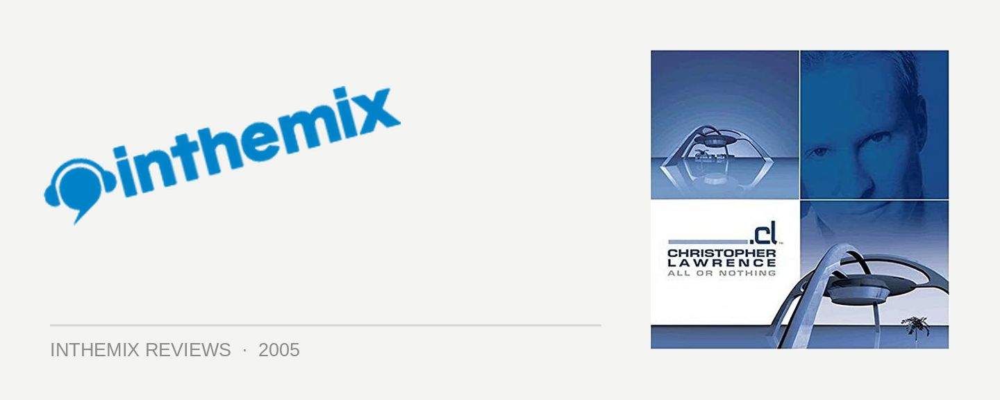

Christopher Lawrence - All or Nothing
(Central Station/MRA)
Being a floor rockin’ DJ doesn’t always equate to being an excellent producer as well. These days it seems like every two-bit DJ is trying to push their own production work in their sets and mix CDs; while a lot of the time this may unveil the blessing of a truly gifted musical mind, sometimes you can’t help but wish they’d left their egos in their record boxes. For the last few years Christopher Lawrence has been earning himself the reputation of America’s most credible source of underground trance, screaming up heights of the Mixmag poll to secure a top-10 position in last year’s results. With the release of his debut album All or Nothing, the time has come to deliver the verdict on whether he can deliver as a producer as well.
From the point when the first synth wash kicks in, it’s clear that Lawrence is pursuing a traditional sound with All or Nothing, rather than trying to push the boundaries. There is some space for diversity of sound on the album: Untitled Dub with Noise has some rocky breakbeats laid over bass guitars, Mind Eraser features a thick, heavy bassline while Hotrod is adrenaline pumping and kick heavy. But it isn’t long before Lawrence’s inexperience as a producer becomes squeamishly apparent.
A majority of the material on All or Nothing reeks of retro trance, leaving the impression that it emerged out of the 90’s rather than truly being on the cutting edge. It’s hard to get away from the fact that it all sounds pretty dated, that Lawrence doesn’t bring much new to the table and that we’ve heard it all before. Even worse, the production seems to wander aimlessly on many of the tunes, with songs like October’s Child going absolutely nowhere.
What is most surprising is the lack of any big trance melodies. Often the album seems to be building towards it, before dropping out to leave the listener puzzled as the track screeches to a halt. What remains is a near total absence of any memorable hooks or melodies, suggesting that perhaps Lawrence was seeking to inject his trance with a progressive edge – except the music lacks the layering or sophistication to really be slotted into that category. You’re left with the impression of a newbie struggling to get their head around Pro Tools or Reason for the first time: the foundations of beats and basslines are there, but it lacks the colourful creativity needed to make it jump out of the speakers at you.
What All or Nothing demonstrates is that, as much as any rock bogan may harp on about electronic music being “made by computers”, it’s the creative ideas that people bring to the table rather than what they do with the machines that makes the difference. It would be great to give Lawrence a positive rap as recognition of his drive behind the more underground side of trance, but it’s very difficult to get inspired by what’s on offer here. Nothing innovative, nothing surprising, nothing new – just an hour of boring, bland, generic trance. Christopher Lawrence may have earnt his stripes as a certified floor mover, but as a producer he’s got a way to go yet.